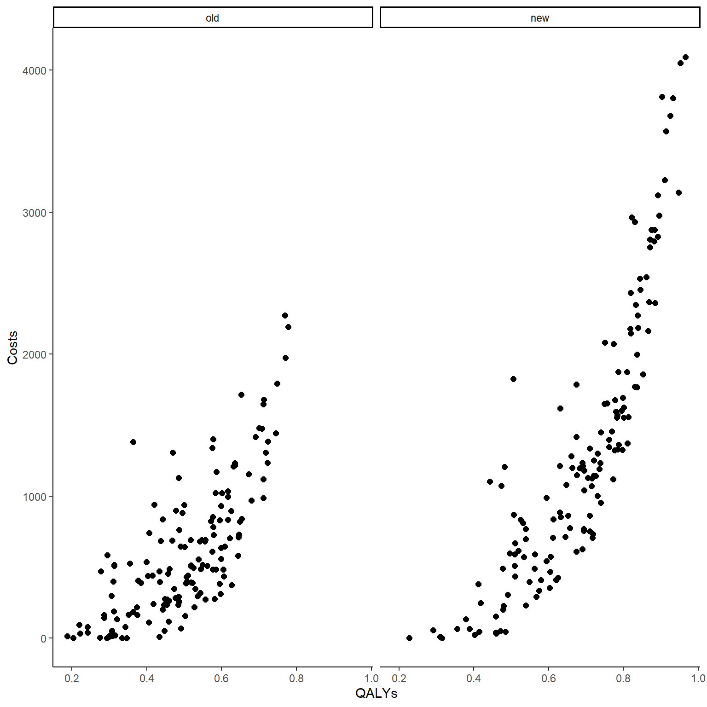
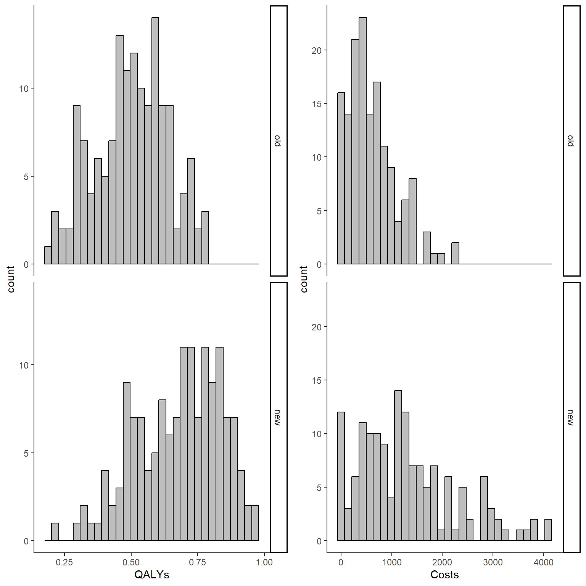
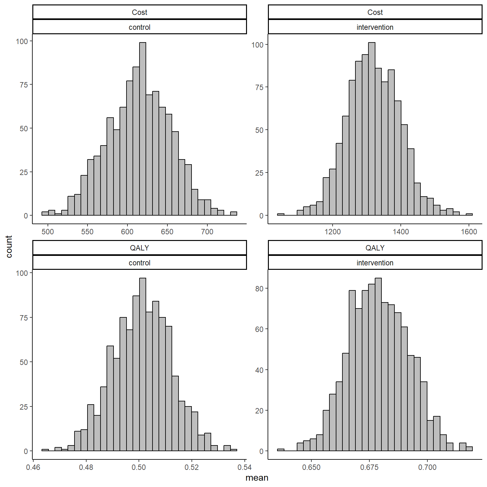

![]()
set.seed(768)
n <- 300
id <- seq(1:n)
trt <- c(rep(0, n/2),rep(1, n/2))
mean_e1 <- c(0.5)
mean_e2 <- c(0.7)
sigma_e <- 0.15
tau1_e <- ((mean_e1*(1-mean_e1))/(sigma_e^2)-1)
tau2_e <- ((mean_e2*(1-mean_e2))/(sigma_e^2)-1)
alpha1_beta <- tau1_e*mean_e1
beta1_beta <- tau1_e*(1-mean_e1)
alpha2_beta <- tau2_e*mean_e2
beta2_beta <- tau2_e*(1-mean_e2)
e1 <- rbeta(n/2, alpha1_beta, beta1_beta)
e2 <- rbeta(n/2, alpha2_beta, beta2_beta)
mean_c1 <- 500
mean_c2 <- 1000
sigma_c <- 300
tau1_c <- mean_c1/(sigma_c^2)
tau2_c <- mean_c2/(sigma_c^2)
ln.mean_c1 <- log(500) + 5*(e1-mean(e1))
c1 <- rgamma(n/2, (exp(ln.mean_c1)/sigma_c)^2, exp(ln.mean_c1)/(sigma_c^2))
ln.mean_c2 <- log(1000) + 5*(e2-mean(e2)) + rgamma(n/2,0,tau2_c)
c2 <- rgamma(n/2, (exp(ln.mean_c2)/sigma_c)^2, exp(ln.mean_c2)/(sigma_c^2))
QALYs <- c(e1,e2)
Costs <- c(c1,c2)
data_sim_ec <- data.frame(id, trt, QALYs, Costs)
data_sim_ec <- data_sim_ec[sample(1:nrow(data_sim_ec)), ]How to jointly handle skewed data in economic evaluations
Quarto
R
Academia
health economics
Hello folks and happy new year! It feels like a million years since last time I posted here but it is in fact only a month (I really try to keep it constant despite all things happening!) since my last update. Maybe the Xmas holidays in between give me the illusion of lot of time passing. Regardless, here I am back again with some new exciting content about doing economic evaluations with R.
Today I wanted to look at the importance that the violation of the assumption of Normality for health economics data, e.g. typically costs but also QALYs, may have on the final results of a typical trial-based analyis. In addition, as perhaps those familiar with this filed knows, presence of substantial level of skewness (and so clear indication of non-Normality) often characterises HE data in combination with small sample sizes which, in turn, may lead to results that are not robust to departures from the Normality assumption. This is often true for costs (by definition on how this variable is computed - positive skewness) but also for the effects (e.g. QALYs - negative or positive skewness) in many other cases. As usual, in order to deal with these concepts in a simplified framework, I will focus in my examples on total costs and QALYs variables that are assumed to be computed on all individuals in a trial after aggregating the individual costs and utilities collected at each time point during the trial (see previous posts to know more about this). In addition to what we saw so far, we now also incorporate the element of correlation between the two outcomes that was introduced in the last post, therefore taking into account the association between the two non-Normally distributed variables.
For example, let’s start by simulating some non-Normal bivariate cost and QALY data for a total of \(300\) patients assigned to two competing intervention groups (\(t=0,1\)). Typically, costs are skewed to the right with a few individuals presenting very high cost values and the majority having small costs; the nature of the distribution of the QALYs can be quite different depending on the field considered: in a context of relatively healthy subjects and a non-life threatening intervention, QALYs can be expected to have a distribution skewed to the left. When generating the data, we can try to mimic these features by using alternative distributions to the Normal that possess such characteristics, e.g. Gamma for costs and Beta for QALYs.
In the code above I simulated first QALY data within each arm and then specified the conditional mean of the cost variables given the effect values generated in the respective arm. This way I can generate the two variables in each arm while also capturing the dependence between the variables expressed in terms of the regression coefficient linking the conditional mean costs to the QALYs variables. To have a better understanding of how suc coefficient \(\beta\) may impact the correlation between the two variables we can simulate the data with different values of \(\beta\) affects the final correlation value between the variables by treatment group.
#empirical correlation between e and c (across groups)
cor(data_sim_ec$QALYs,data_sim_ec$Costs)[1] 0.8399915#scatterplot of e and c data by group
library(ggplot2)
data_sim_ec$trtf <- factor(data_sim_ec$trt)
levels(data_sim_ec$trtf) <- c("old","new")
ggplot(data_sim_ec, aes(x=QALYs, y=Costs)) +
geom_point(size=2, shape=16) + theme_classic() +
facet_wrap(~trtf)
Both the computed correlation and graphs clearly indicate the existence of a strong positive correlation between the outcomes within each arm. The use of Beta and Gamma distribution also ensures that such variables are non-Normally distributed, and we can check this by plotting an histogram of the data.
data_sim_ec$trtf <- factor(data_sim_ec$trt)
levels(data_sim_ec$trtf) <- c("old","new")
QALY_hist <- ggplot(data_sim_ec, aes(x=QALYs))+
geom_histogram(color="black", fill="grey")+
facet_grid(trtf ~ .) + theme_classic()
Tcost_hist <- ggplot(data_sim_ec, aes(x=Costs))+
geom_histogram(color="black", fill="grey")+
facet_grid(trtf ~ .) + theme_classic()
gridExtra::grid.arrange(QALY_hist, Tcost_hist, nrow = 1, ncol = 2)
In order to account for correlation while also avoiding the specification of normal assumptions for both variables (which here is violated), health economists can use two different approaches:
- Actually model the dependence between the variables through a statistical model that does not rely on Normality assumptions but which captures the relationship between the variables.
This is the most difficult solution as there are very few methods that can be easily implemented in standard software which are able to accomplish the task as most of these will rely on Normality. Within a classical statistical framework, methods such as Generalised Linear Regression models can be used to account for skewness, e.g. Beta regression or Gamma regression. These, however, fail to account for correlation between variables and may lead to estimates that are too uncertain compared to those obtained if correlation is modelled. A possible solution to this problem is to specify the models within a Bayesian statistical framework which by its nature is well equipped to deal with non-Normal distribution and joint model of multiple variables. This is something we will see in future posts.
- Model the variables as if they were independent and Normally distributed BUT then apply bootstrapping as a non-parametric technique (see previous posts for an introduction to the method) to generate estimate that have been proven to be robust to deviation from Normality and which are also able to indirectly capture the correlation between variables when these are bootstrapped together.
As we saw in past posts, in R, we can for example use the boot package which allows to flexibly define our bootstrapping procedure and to include within the procedure our linear regression model using the following commands:
library(boot)
boot_lm <- function(data, i){
data2 <- data[i,]
lm.boot.Q <- lm(QALYs ~ trtf, data = data2)
lm.boot.TC <- lm(Costs ~ trtf, data = data2)
em.lm.boot.Q <- emmeans(lm.boot.Q,~trtf)
em.lm.boot.TC <- emmeans(lm.boot.TC,~trtf)
trt_diffQ <- coef(lm.boot.Q)[2]
trt_diffTC <- coef(lm.boot.TC)[2]
mean_Q <- summary(em.lm.boot.Q)[,2]
mean_TC <- summary(em.lm.boot.TC)[,2]
return(c(trt_diffQ,trt_diffTC,mean_Q,mean_TC))
}
set.seed(4567)
library(emmeans)
boot_est_lm <- boot(data_sim_ec, boot_lm, R=1000)
delta_e_boot<-boot_est_lm$t[,1]
mu_e_boot<-cbind(boot_est_lm$t[,3],boot_est_lm$t[,4])
delta_tc_boot<-boot_est_lm$t[,2]
mu_tc_boot<-cbind(boot_est_lm$t[,5],boot_est_lm$t[,6])The code above proceeds to create a function that repeat the same process a given number of times, equivalent to \(B=1000\), the number bootstrap samples. The higher \(B\) the more robust will be the final estimate of the mean outcomes. Within the function, R fits separate linear regression to the QALY and Cost data to retrieve the corresponding mean estimates and differentials between groups. The process is finally iterated via the boot function to generate the bootstrap samples using sampling with replacement and I set the number of replications that I want to use in the argument R. Finally, after the command has finished running, I create objects containing the set of bootstrapped values for each of the stored quantities by extracting these from the output of the boot function. For example, we can inspect the mean estimates for QALYs and Total costs by group by typing:
data_est_mean <- data.frame(c(mu_e_boot[,1],mu_e_boot[,2], mu_tc_boot[,1], mu_tc_boot[,2]))
names(data_est_mean)[1] <- "value"
data_est_mean$outcome <- c(rep("QALY",dim(mu_e_boot)[1]*2), rep("Cost",dim(mu_e_boot)[1]*2))
data_est_mean$trt <- c(rep("control",dim(mu_e_boot)[1]), rep("intervention",dim(mu_e_boot)[1]), rep("control",dim(mu_e_boot)[1]), rep("intervention",dim(mu_e_boot)[1]))
data_est_mean$outcome <- factor(data_est_mean$outcome)
data_est_mean$trt <- factor(data_est_mean$trt)
ggplot(data_est_mean, aes(x=value))+ xlab("mean")+
geom_histogram(color="black", fill="grey")+ theme_classic() +
facet_wrap( ~ outcome + trt, scales = "free")
If the number of bootstrapped samples is large enough, then estimates of mean QALYs and Costs will be guaranteed to converge to the true values even under violation of Normality assumptions in the sample. In addition, when bootstrapping QALYs and Costs for the same individuals at the same time, correlation is indirectly taken into account by means of the re-sampling procedure. To note that this is not as efficient as a proper modelling of the dependence between variables but it can be used as a trick to at least not completely ignoring the correlation.
In future posts I will talk about to go beyond this simple approach and specify a Bayesian model which properly takes into account both correlation and skewness in the observed data. The method still relies on an iterative algorithm procedure but the theoretical underpinnings and justifications for its use are completely different and much stronger!. Especially in HE where interest is not on point estimates by themselves but rather on posterior probabilities of such estimates, the Bayesian approach represents a powerful tool to not only analyse HE data but also take into account different sources of uncertainty (e.g. missing data, sampling, model) and how these quantitatively affect the final estimation procedure (and from then the final CEA decision). Stay tuned !!!!